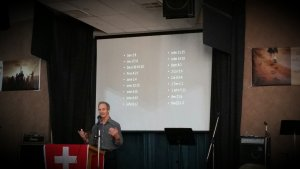

<?xml version="1.0" encoding="UTF-8"?><rss version="2.0"
	xmlns:content="http://purl.org/rss/1.0/modules/content/"
	xmlns:wfw="http://wellformedweb.org/CommentAPI/"
	xmlns:dc="http://purl.org/dc/elements/1.1/"
	xmlns:atom="http://www.w3.org/2005/Atom"
	xmlns:sy="http://purl.org/rss/1.0/modules/syndication/"
	xmlns:slash="http://purl.org/rss/1.0/modules/slash/"
	>

<channel>
	<title>LIFE series &#8211; Wagga Church of Christ</title>
	<atom:link href="https://www.waggachurchofchrist.org.au/category/life-series/feed/" rel="self" type="application/rss+xml" />
	<link>https://www.waggachurchofchrist.org.au</link>
	<description>Growing together In Christ to Impact Our World</description>
	<lastBuildDate>Sun, 30 Dec 2018 05:21:35 +0000</lastBuildDate>
	<language>en-AU</language>
	<sy:updatePeriod>hourly</sy:updatePeriod>
	<sy:updateFrequency>1</sy:updateFrequency>
	<generator>https://wordpress.org/?v=4.9.9</generator>

<image>
	<url>https://www.waggachurchofchrist.org.au/wp-content/uploads/2016/07/cropped-cross_sml_2-32x32.png</url>
	<title>LIFE series &#8211; Wagga Church of Christ</title>
	<link>https://www.waggachurchofchrist.org.au</link>
	<width>32</width>
	<height>32</height>
</image> 
	<item>
		<title>LIFE Series part 6 &#8211; Conclusion</title>
		<link>https://www.waggachurchofchrist.org.au/life-series-part-6-conclusion/</link>
		<pubDate>Sun, 27 Aug 2017 00:40:50 +0000</pubDate>
		<dc:creator><![CDATA[Wagga Church of Christ]]></dc:creator>
				<category><![CDATA[LIFE series]]></category>
		<category><![CDATA[Phil Briggs]]></category>
		<category><![CDATA[SERMONS]]></category>
		<category><![CDATA[Christian Living]]></category>
		<category><![CDATA[learning about God]]></category>
		<category><![CDATA[life]]></category>
		<category><![CDATA[Spirit]]></category>

		<guid isPermaLink="false">https://www.waggachurchofchrist.org.au/?p=1162</guid>
		<description><![CDATA[<p>Speaker: Phil Briggs &#8211; the final sermon in our series on LIFE. Phil brings this study to conclusion with the never-ending promise of Christ dwelling within us &#8211; in what is His Testimony! Download this audio</p>
<p>The post <a rel="nofollow" href="../../../life-series-part-6-conclusion/index.html">LIFE Series part 6 &#8211; Conclusion</a> appeared first on <a rel="nofollow" href="../../../index.html">Wagga Church of Christ</a>.</p>
]]></description>
				<content:encoded><![CDATA[<div>
<audio controls="controls"><source src="https://archive.org/download/20170827LIFE6Final/20170827LIFE6Final.mp3" type="audio/mpeg" /><strong><br />
</strong></audio></p>
<div>
<p><strong>Speaker: Phil Briggs</strong></p>
</div>
<div>&#8211; the final sermon in our series on LIFE. Phil brings this study to conclusion with the never-ending promise of Christ dwelling within us &#8211; in what is His Testimony!</div>
<div><a href="https://archive.org/download/20170827LIFE6Final/20170827LIFE6Final.mp3" download="">Download this audio</a></div>
<p>The post <a rel="nofollow" href="../../../life-series-part-6-conclusion/index.html">LIFE Series part 6 &#8211; Conclusion</a> appeared first on <a rel="nofollow" href="../../../index.html">Wagga Church of Christ</a>.</p>
]]></content:encoded>
	<enclosure url="https://archive.org/download/20170827LIFE6Final/20170827LIFE6Final.mp3" length="0" type="audio/mpeg" />
		</item>
		<item>
		<title>LIFE Series part 5 &#8211; Living in the Spirit</title>
		<link>https://www.waggachurchofchrist.org.au/life-series-part-5-living-spirit/</link>
		<pubDate>Mon, 31 Jul 2017 22:10:24 +0000</pubDate>
		<dc:creator><![CDATA[Wagga Church of Christ]]></dc:creator>
				<category><![CDATA[LIFE series]]></category>
		<category><![CDATA[Phil Briggs]]></category>
		<category><![CDATA[SERMONS]]></category>
		<category><![CDATA[eternal life]]></category>
		<category><![CDATA[Jesus]]></category>
		<category><![CDATA[life]]></category>
		<category><![CDATA[Love]]></category>
		<category><![CDATA[Spirit]]></category>

		<guid isPermaLink="false">https://www.waggachurchofchrist.org.au/?p=1148</guid>
		<description><![CDATA[<p>Speaker: Phil Briggs &#8211; the fifth sermon in our series on LIFE &#8211; Phil explains living life in the Spirit, and the significance of &#8220;the blood of Christ&#8221; for all of humanity. Download this audio</p>
<p>The post <a rel="nofollow" href="../../../life-series-part-5-living-spirit/index.html">LIFE Series part 5 &#8211; Living in the Spirit</a> appeared first on <a rel="nofollow" href="../../../index.html">Wagga Church of Christ</a>.</p>
]]></description>
				<content:encoded><![CDATA[<div>
<audio controls="controls"><source src="https://archive.org/download/300717LifePt5final/30%20-07-17%20lifePt5final.mp3" type="audio/mpeg" /><strong><br />
</strong></audio></p>
<div>
<p><strong>Speaker: Phil Briggs</strong></p>
</div>
<div>&#8211; the fifth sermon in our series on LIFE &#8211; Phil explains living life in the Spirit, and the significance of &#8220;the blood of Christ&#8221; for all of humanity.</div>
<div><a href="https://archive.org/download/300717LifePt5final/30%20-07-17%20lifePt5final.mp3" download="">Download this audio</a></div>
<p>The post <a rel="nofollow" href="../../../life-series-part-5-living-spirit/index.html">LIFE Series part 5 &#8211; Living in the Spirit</a> appeared first on <a rel="nofollow" href="../../../index.html">Wagga Church of Christ</a>.</p>
]]></content:encoded>
	<enclosure url="https://archive.org/download/300717LifePt5final/30%20-07-17%20lifePt5final.mp3" length="0" type="audio/mpeg" />
<enclosure url="https://archive.org/download/300717LifePt5final/30%20-07-17%20lifePt5final.mp3" length="0" type="audio/mpeg" />
		</item>
		<item>
		<title>LIFE Series part 4 &#8211; God in Jesus</title>
		<link>https://www.waggachurchofchrist.org.au/life-series-part-4-god-in-jesus/</link>
		<pubDate>Sun, 09 Jul 2017 00:01:41 +0000</pubDate>
		<dc:creator><![CDATA[Wagga Church of Christ]]></dc:creator>
				<category><![CDATA[LIFE series]]></category>
		<category><![CDATA[Phil Briggs]]></category>
		<category><![CDATA[SERMONS]]></category>
		<category><![CDATA[Christian Living]]></category>
		<category><![CDATA[learning about God]]></category>
		<category><![CDATA[life]]></category>
		<category><![CDATA[Presence of God]]></category>

		<guid isPermaLink="false">https://www.waggachurchofchrist.org.au/?p=1142</guid>
		<description><![CDATA[<p>Speaker: Phil Briggs &#8211; the fourth sermon in our series on LIFE &#8211; Phil looks at the life of a Man who wholly did the Will of God! Download this audio</p>
<p>The post <a rel="nofollow" href="../../../life-series-part-4-god-in-jesus/index.html">LIFE Series part 4 &#8211; God in Jesus</a> appeared first on <a rel="nofollow" href="../../../index.html">Wagga Church of Christ</a>.</p>
]]></description>
				<content:encoded><![CDATA[<div>
<audio controls="controls"><source src="https://archive.org/download/09072017final/09-07-2017final.mp3" type="audio/mpeg" /><strong><br />
</strong></audio></p>
<div>
<p><strong>Speaker: Phil Briggs</strong></p>
</div>
<div>&#8211; the fourth sermon in our series on LIFE &#8211; Phil looks at the life of a Man who wholly did the Will of God!</div>
<div><a href="https://archive.org/download/09072017final/09-07-2017final.mp3" download="">Download this audio</a></div>
<p>The post <a rel="nofollow" href="../../../life-series-part-4-god-in-jesus/index.html">LIFE Series part 4 &#8211; God in Jesus</a> appeared first on <a rel="nofollow" href="../../../index.html">Wagga Church of Christ</a>.</p>
]]></content:encoded>
	<enclosure url="https://archive.org/download/09072017final/09-07-2017final.mp3" length="0" type="audio/mpeg" />
<enclosure url="https://archive.org/download/09072017final/09-07-2017final.mp3" length="0" type="audio/mpeg" />
		</item>
		<item>
		<title>LIFE series part 3 &#8211; God in us</title>
		<link>https://www.waggachurchofchrist.org.au/life-pt3/</link>
		<pubDate>Sun, 07 May 2017 00:50:36 +0000</pubDate>
		<dc:creator><![CDATA[Wagga Church of Christ]]></dc:creator>
				<category><![CDATA[LIFE series]]></category>
		<category><![CDATA[Phil Briggs]]></category>
		<category><![CDATA[SERMONS]]></category>
		<category><![CDATA[Christian Living]]></category>
		<category><![CDATA[learning about God]]></category>
		<category><![CDATA[life]]></category>

		<guid isPermaLink="false">https://www.waggachurchofchrist.org.au/?p=1066</guid>
		<description><![CDATA[<p>Speaker: Phil Briggs &#8211; the third sermon in our series on LIFE &#8211; Phil looks at God in the lives of three key men in the Old Testament &#8211; David, Ezekiel and Daniel, and how God&#8217;s same promise of hope is there for us also to receive freely! Download this audio</p>
<p>The post <a rel="nofollow" href="../../../life-pt3/index.html">LIFE series part 3 &#8211; God in us</a> appeared first on <a rel="nofollow" href="../../../index.html">Wagga Church of Christ</a>.</p>
]]></description>
				<content:encoded><![CDATA[<div>
<audio controls="controls"><source src="https://archive.org/download/7417FINAL/7-4-17FINAL.mp3" type="audio/mpeg" /><strong><br />
</strong></audio></p>
<div>
<p><strong>Speaker: Phil Briggs</strong></p>
</div>
<div>&#8211; the third sermon in our series on LIFE &#8211; Phil looks at God in the lives of three key men in the Old Testament &#8211; David, Ezekiel and Daniel, and how God&#8217;s same promise of hope is there for us also to receive freely!</div>
<div><a href="https://archive.org/download/7417FINAL/7-4-17FINAL.mp3" download="">Download this audio</a></div>
<p>The post <a rel="nofollow" href="../../../life-pt3/index.html">LIFE series part 3 &#8211; God in us</a> appeared first on <a rel="nofollow" href="../../../index.html">Wagga Church of Christ</a>.</p>
]]></content:encoded>
	<enclosure url="https://archive.org/download/7417FINAL/7-4-17FINAL.mp3" length="0" type="audio/mpeg" />
<enclosure url="https://archive.org/download/7417FINAL/7-4-17FINAL.mp3" length="0" type="audio/mpeg" />
		</item>
		<item>
		<title>LIFE series part 2 &#8211; Jesus in us</title>
		<link>https://www.waggachurchofchrist.org.au/jesus-in-us/</link>
		<pubDate>Mon, 17 Apr 2017 09:21:50 +0000</pubDate>
		<dc:creator><![CDATA[Wagga Church of Christ]]></dc:creator>
				<category><![CDATA[LIFE series]]></category>
		<category><![CDATA[Phil Briggs]]></category>
		<category><![CDATA[SERMONS]]></category>

		<guid isPermaLink="false">https://www.waggachurchofchrist.org.au/?p=1058</guid>
		<description><![CDATA[<p>Speaker: Phil Briggs &#8211; the next in our series on LIFE &#8211; Phil leads us through what it really means to have Jesus in us and how the Life of Jesus in us comes at somewhat of a &#8220;discount&#8221; in our western world! Download this audio</p>
<p>The post <a rel="nofollow" href="../../../jesus-in-us/index.html">LIFE series part 2 &#8211; Jesus in us</a> appeared first on <a rel="nofollow" href="../../../index.html">Wagga Church of Christ</a>.</p>
]]></description>
				<content:encoded><![CDATA[<div>
<audio controls="controls"><source src="https://archive.org/download/1642016Final/16-4-2016%20final.mp3" type="audio/mpeg" /><strong><br />
</strong></audio></p>
<div>
<p><strong>Speaker: Phil Briggs</strong></p>
</div>
<div>&#8211; the next in our series on LIFE &#8211; Phil leads us through what it really means to have Jesus in us and how the Life of Jesus in us comes at somewhat of a &#8220;discount&#8221; in our western world!</div>
<div><a href="https://archive.org/download/1642016Final/16-4-2016%20final.mp3" download="">Download this audio</a></div>
<p>The post <a rel="nofollow" href="../../../jesus-in-us/index.html">LIFE series part 2 &#8211; Jesus in us</a> appeared first on <a rel="nofollow" href="../../../index.html">Wagga Church of Christ</a>.</p>
]]></content:encoded>
	<enclosure url="https://archive.org/download/1642016Final/16-4-2016%20final.mp3" length="0" type="audio/mpeg" />
<enclosure url="https://archive.org/download/1642016Final/16-4-2016%20final.mp3" length="0" type="audio/mpeg" />
		</item>
		<item>
		<title>LIFE series part 1 &#8211; The Revelation of Jesus Christ</title>
		<link>https://www.waggachurchofchrist.org.au/life-series-part-1-revelation-jesus-christ/</link>
		<pubDate>Sun, 19 Mar 2017 02:04:04 +0000</pubDate>
		<dc:creator><![CDATA[Wagga Church of Christ]]></dc:creator>
				<category><![CDATA[LIFE series]]></category>
		<category><![CDATA[Phil Briggs]]></category>
		<category><![CDATA[SERMONS]]></category>
		<category><![CDATA[Christian Living]]></category>
		<category><![CDATA[life]]></category>

		<guid isPermaLink="false">https://www.waggachurchofchrist.org.au/?p=999</guid>
		<description><![CDATA[<p>Speaker: Phil Briggs &#8211; the first sermon in a series on LIFE by Phil Briggs. The Life of God. The life of God in You and Me, and in the Church. The book of Revelation in the Bible is &#8220;The revelation from Jesus Christ, which God gave him to show his servants what must soon take&#8230;</p>
<p>The post <a rel="nofollow" href="../../../life-series-part-1-revelation-jesus-christ/index.html">LIFE series part 1 &#8211; The Revelation of Jesus Christ</a> appeared first on <a rel="nofollow" href="../../../index.html">Wagga Church of Christ</a>.</p>
]]></description>
				<content:encoded><![CDATA[<div></div>
<p><audio controls="controls"><source src="https://archive.org/download/20170319LIFEPt1/2017-03-19%20LIFE%20pt1.mp3" type="audio/mpeg" /><strong><br />
</strong></audio></p>
<div>
<p><strong>Speaker: Phil Briggs</strong></p>
</div>
<div>&#8211; the first sermon in a series on LIFE by Phil Briggs. The Life of God. The life of God in You and Me, and in the Church. The book of Revelation in the Bible is &#8220;The revelation from Jesus Christ, which God gave him to show his servants what must soon take place.&#8221; Revelation 1:1. Phil Briggs unpacks the message within the apocalyptic language of this amazing book to provide an insight into it&#8217;s context and meaning for us today.</div>
<div><a href="https://archive.org/download/20170319LIFEPt1/2017-03-19%20LIFE%20pt1.mp3" download="">Download this audio</a></div>
<p></p>
<p>The post <a rel="nofollow" href="../../../life-series-part-1-revelation-jesus-christ/index.html">LIFE series part 1 &#8211; The Revelation of Jesus Christ</a> appeared first on <a rel="nofollow" href="../../../index.html">Wagga Church of Christ</a>.</p>
]]></content:encoded>
	<enclosure url="https://archive.org/download/20170319LIFEPt1/2017-03-19%20LIFE%20pt1.mp3" length="0" type="audio/mpeg" />
		</item>
	</channel>
</rss>
